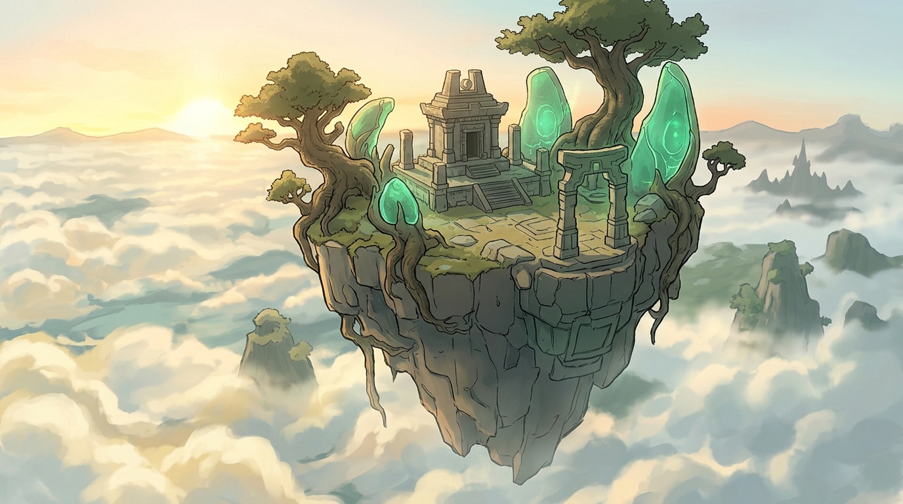
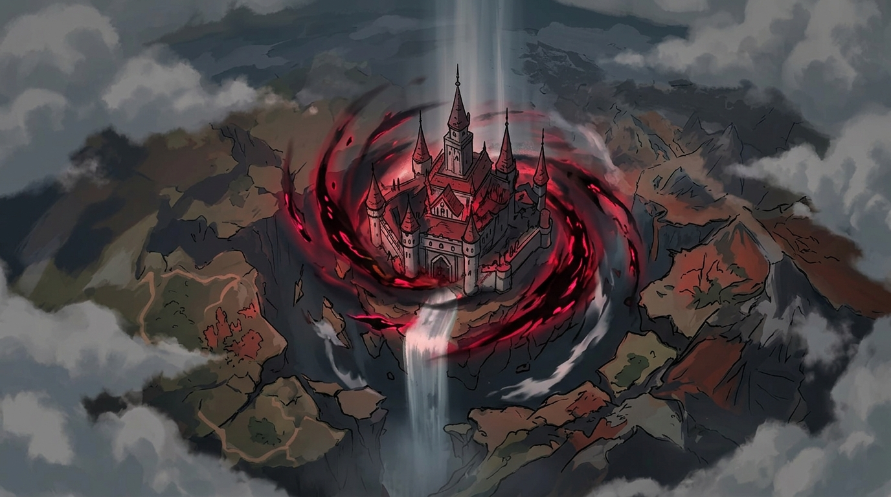
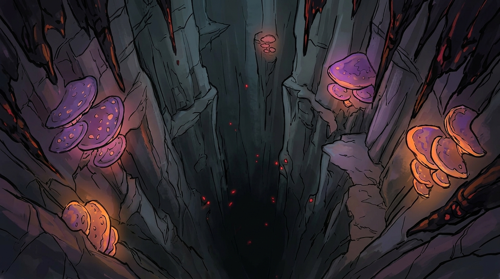
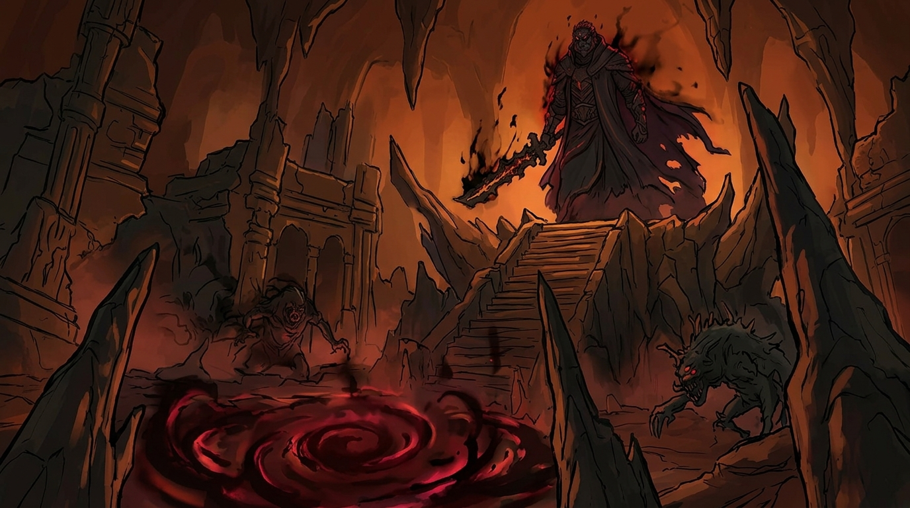

I
LES CIEUX D'HYRULE
Là où tout commence... Faites défiler pour plonger vers le royaume.

II
LA CORRUPTION DU ROYAUME
Le Château d'Hyrule est captif d'un mal ancien.

III
LES ABYSSES
Plongée vertigineuse dans l'obscurité de la terre.

IV
LE ROI DÉMON
L'affrontement final vous attend au fond du monde.